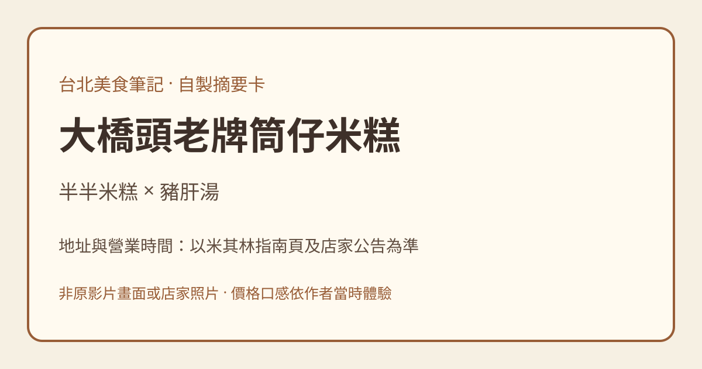

Facebook｜蛋談美食：大橋頭老牌筒仔米糕與米其林查核

本圖為自製文字摘要卡，不是原影片畫面或店家照片。
貼文重點
「蛋談美食第930」的公開文案推薦大份半半米糕與豬肝湯。作者描述米糕可選肥瘦，喜歡半肥半瘦，配甜辣醬與蘿蔔辣椒醬；也稱豬肝鮮嫩、湯頭甘甜，有時加福州丸。這些口感和喜好是作者個人體驗，不代表本次實際試吃。
作者說一份半半配豬肝湯「一百初頭」；其貼文日期與現行菜單價格未確認，不應當作現在售價。
米其林官方查核與實用資訊
2026-11-08 查核：米其林指南餐廳頁列出「大橋頭老牌筒仔米糕 (延平北路)」，地址為台北市大同區延平北路三段41號；電話 02-2594-4685。官方頁所列週一、週三至週日 07:00–16:00，週二休息，與貼文相符；營業資訊可能變動，出發前請向店家確認。
米其林 2019 年官方專文確有「必比登推介」紀錄；本次餐廳頁可確認收錄及地址營業資訊，不能只憑歷史文章推定每年皆入選或目前獎項分類。必比登不等於米其林星級。
來源與影像限制
分享網址實際解析至下方 Reel，公開文案已展開；頁面顯示影片約 20.8 秒，但本次未取得或觀看完整影片，亦無逐字稿，不以縮圖推測影片內容。原片 OG 縮圖為米糕與湯的畫面，已核對並保留非公開副本；貼文明示不得任意轉載，重用授權未確認，因此公開頁不使用該縮圖。公開可見不代表允許轉載。
原始連結
- 分享網址：https://www.facebook.com/share/r/1ABGsF6Ham/?mibextid=wwXIfr
- 解析後 Reel：https://www.facebook.com/reel/2338158600321803
- 米其林餐廳頁：https://guide.michelin.com/tw/zh_TW/taipei-region/taipei/restaurant/da-qiao-tou-tube-rice-pudding
- 米其林 2019 年必比登專文：https://guide.michelin.com/tw/zh_TW/article/dining-out/bib-da-qiao-tou-tube-rice-pudding
查核日期：2026-11-08。來源證據 JSON 與原片縮圖僅存本機，不隨網站公開。